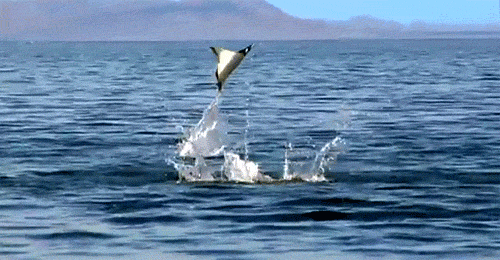
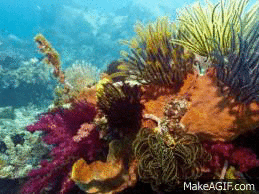
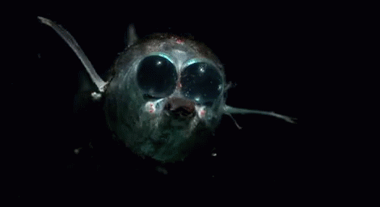
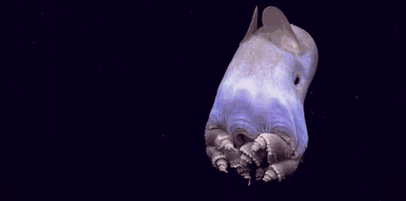
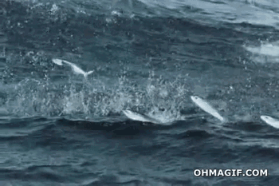
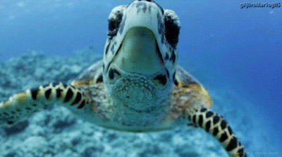
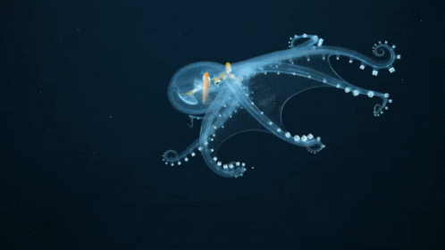
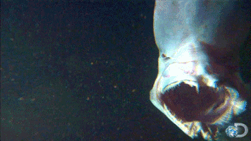
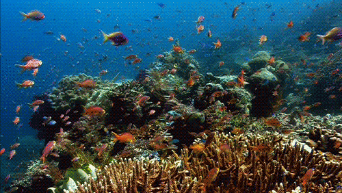
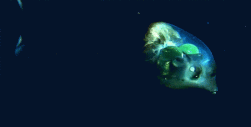

- Animales de superficie:
- Animales de arrecife::
- Animales de profundidad
- Animales abisales:
¿Cuáles son los animales acuaticos?
Los animales del mar o animales marinos son aquellos que están adaptados a la vida dentro del mar, en su superficie o en sus orillas. Dado que nuestro planeta está en dos tercios de su superficie cubierto por agua, la vida marina abarca una enorme y diversa cantidad de animales, repartida en los cinco océanos y adaptada a sus hábitats específicos.
Tipos de animales que hábitan el mar:
Los más cercanos al Sol y por lo tanto acostumbrados a las aguas más cálidas y luminosas, en donde abundan las algas y el plancton, pero también los depredadores.
Que forman extensas comunidades en torno al coral, las piedras y los bosques de algas de diverso tipo, en algunos de los lugares más biodiversos del planeta, equivalentes a selvas tropicales, pero bajo el mar.
Que viven en aguas más frías y oscuras, a mayor profundidad, en un hábitat más exclusivo y retador.
Habitantes de las regiones más hondas, oscuras, gélidas e inhóspitas del mar, a las que no llega la luz solar y que se hallan bajo inmensas presiones ambientales.
A continuación se muestra una tabla en la que se reflejan algunos ejemplos sobre los tipos de animales dichos anteriormente:
| Animales de superficie | Animales de arrecife | Animales de profundidad | Animales abisales |
|---|---|---|---|
|  |  |  |  |
|  |  |  |  |
|  |  |  |